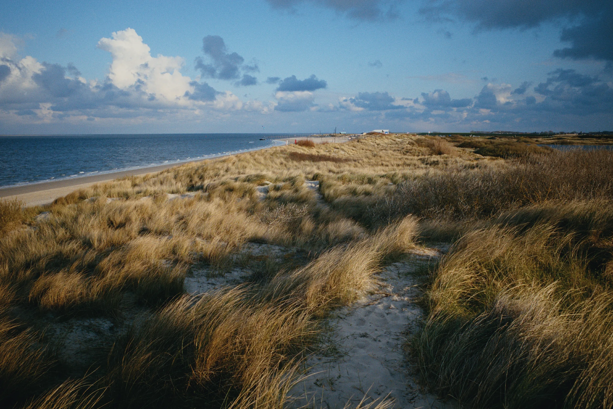
不是滤镜。每张照片都要经过一卷胶片和一张相纸：曝光、显影、放大、扫描，用的是实测的光谱灵敏度和特性曲线。
渲染引擎来自 SpektraLab，胶片数据来自 spektrafilm。全部在手机 GPU 上计算，照片不离开手机。
一张 RAW，六卷胶片。
只换胶片和相纸。色彩、高光、颗粒和光晕都跟着变。
Kodak Portra 400C-41 彩色负片 · ISO 400
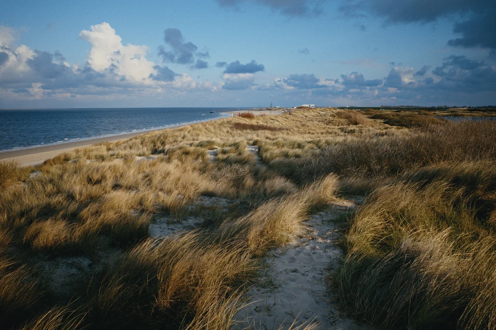
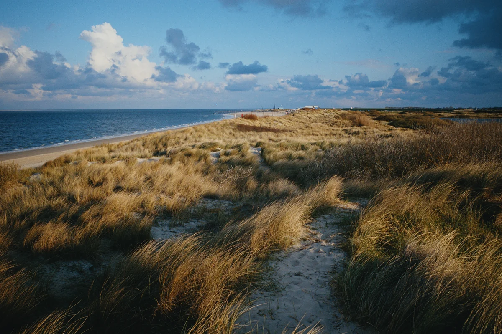
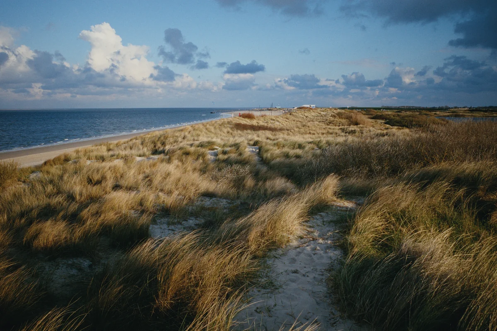
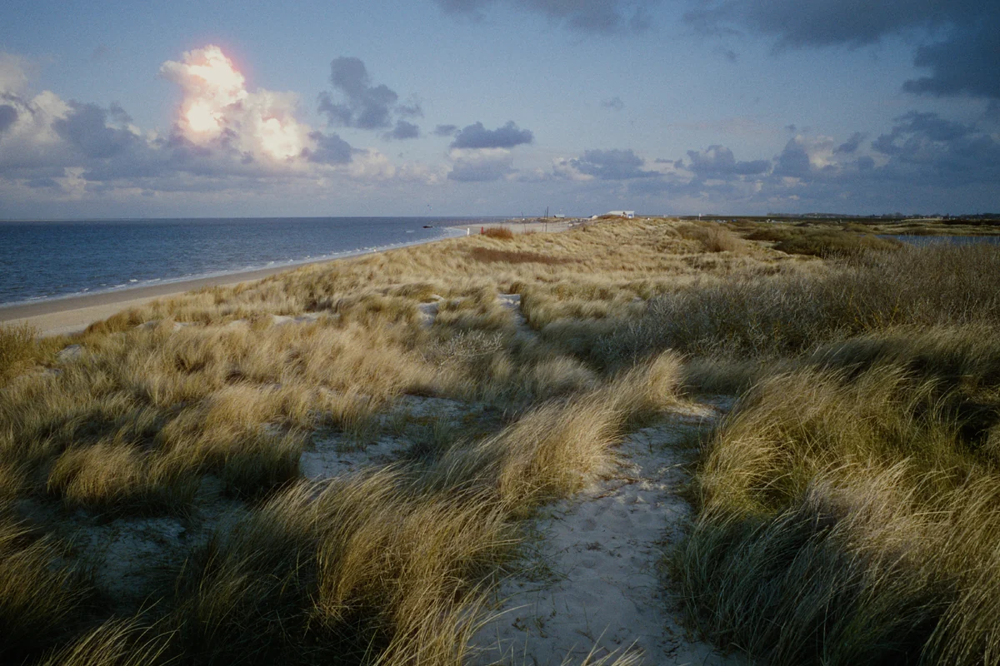
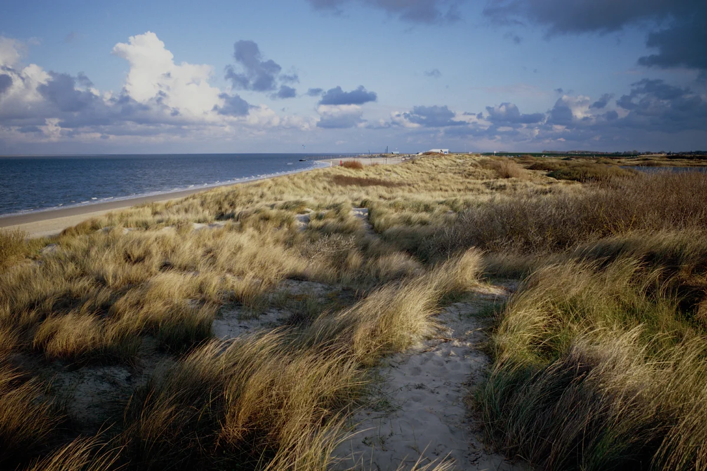
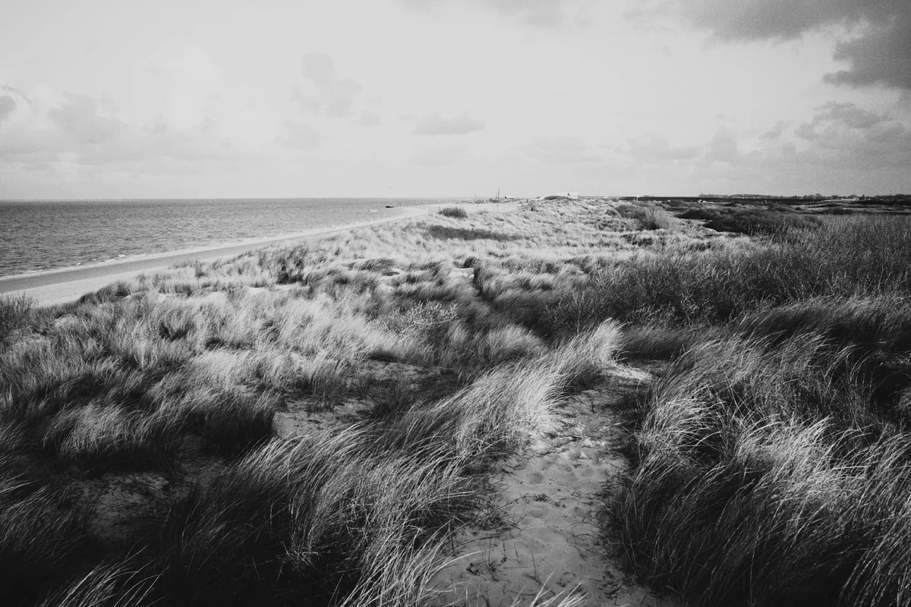
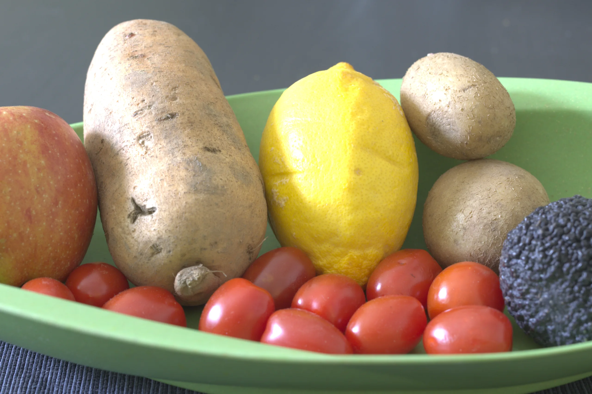
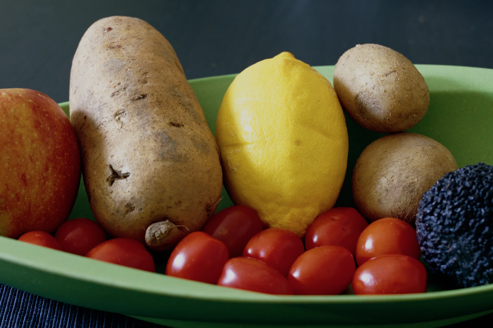
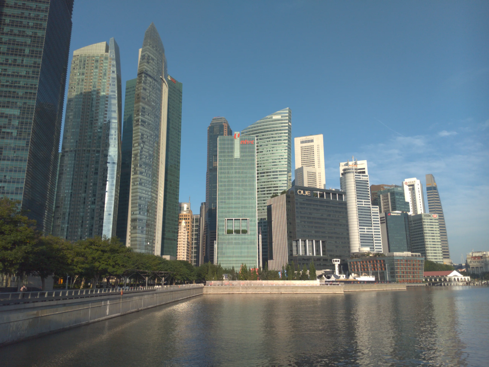
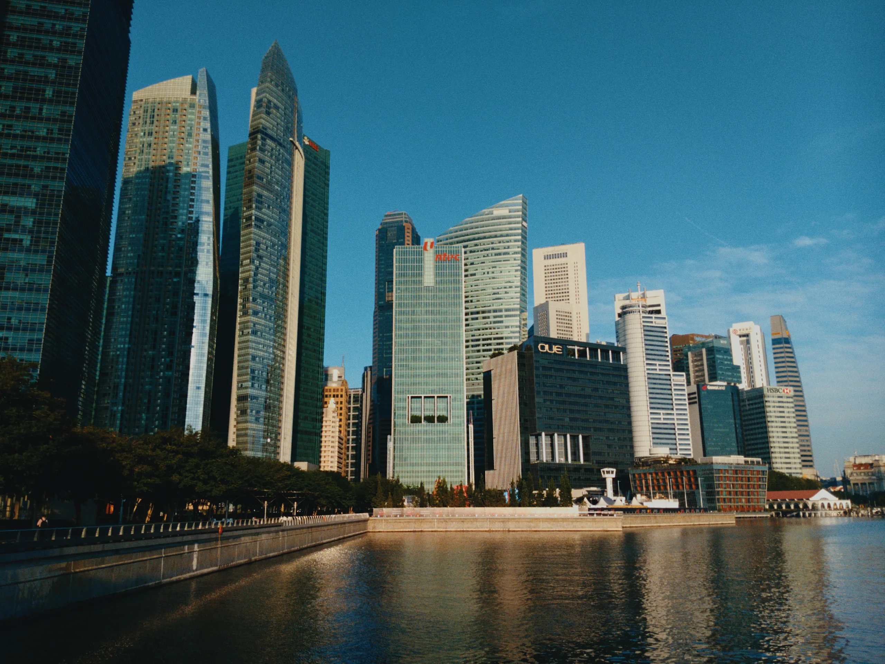
中性解码，
到一张冲好的照片。
中性解码Kodak Ektar 100
那圈红光，
是算出来的。
CineStill 800T 没有防光晕层。强光穿过乳剂，在片基背面反射，又曝光了一次，亮部边缘就有了红色的光。换成有防光晕层的 Portra 400，同一处没有。
把指针移到照片上看细节
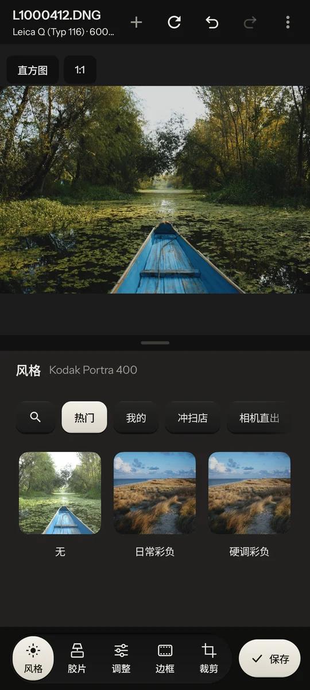
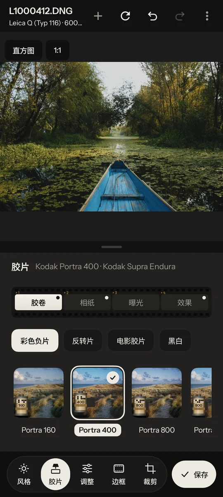
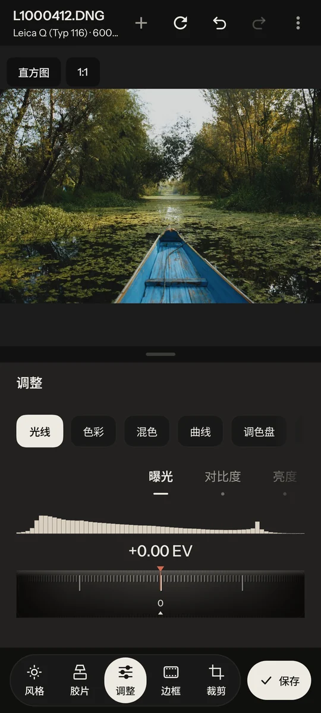
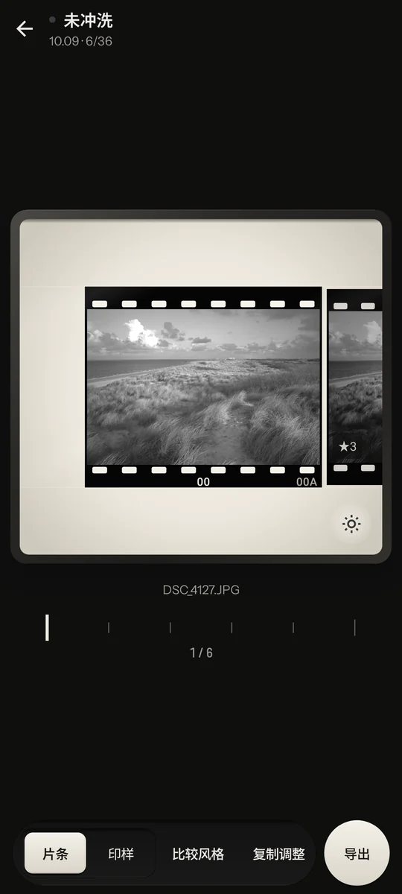
选一种风格
87 款，每款设定好胶片、相纸和效果。拖动强度就够了。
或者，自己冲
胶卷、相纸、曝光、效果，按暗房的顺序一步步来。
细调
横滑选项目，用相机一样的刻度微调。曲线、色轮、蒙版都在。
一卷一卷地看
观片台按卷整理，打星、选片，把一张的调整贴给整卷。
87
款风格
负片、反转、电影、黑白
0.016
与桌面版的最大平均色差 ΔE00
43 组逐像素对照，人眼约在 1.0 才可分辨
0
张照片上传
无账号、无广告、无统计
色差在云主机软件 GPU 上测得，尚未在 Adreno 手机上大规模验证。方法与数据
还有
- 相机 RAWDNG、CR3、NEF、ARW、RAF、RW2、ORF，LibRaw 解码
- 手机照片JPEG、HEIC、PNG、WebP，Display P3 按 P3 处理
- 16-bit TIFFsRGB、P3、ProPhoto、Adobe RGB，嵌入 ICC
- 极致渲染原始分辨率输出 4:4:4 JPEG
- 片边与边框135、半格、XPan、6×7，参数条识别 33 个品牌
- 导入预设.cube、HaldCLUT、Lightroom 预设和富士配方
- 后台导出边修边导，完成后显示格式、尺寸和大小
- 中文与 English设置里随时切换